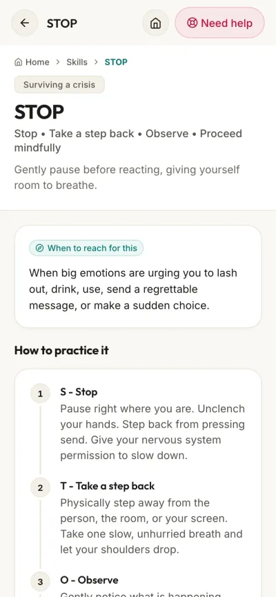

The DBT STOP skill: pause before you react
The STOP skill is for the moment a strong feeling pushes you to do something that will make things worse. It has four steps: Stop, Take a step back, Observe, Proceed mindfully. It comes from dialectical behaviour therapy (DBT), where it is one of the crisis survival skills.
If you might hurt yourself or someone else, call 112 or the Suicide Crisis Helpline on 0800 567 567 now.
This page is a companion, not treatment. DBT skills are best learned with a therapist or a skills group.
The four steps
SStop
Freeze where you are. Don't speak, don't move, don't press send. A strong feeling wants you to act before you think, and freezing for a moment takes that choice away from it. Some people picture a stop sign.
TTake a step back
Put some distance between you and the moment, in your head and, if you can, with your body: leave the room, put the phone down, turn away. Take a slow, deep breath, and keep breathing slowly until you feel back in charge.
OObserve
Notice what is going on around you: what actually happened, what was said, who is there. Then notice what is going on inside you: your thoughts, your feelings, what your body is doing, and what the feeling wants you to do. Stick to facts, not verdicts. "My chest is tight and I want to shout" is a fact.
PProceed mindfully
Now choose. Think about what you want out of this situation, and about the other people in it. Then ask yourself which action will make this better and which will make it worse. DBT calls this checking with Wise Mind. Do the next small thing that makes it better, even if that is just waiting.

The WiseMind app keeps STOP, step by step, alongside the other DBT skills. It works offline, so it is there when you need it.
A real example
An accusing message arrives. Your pulse jumps and you start typing a reply.
- Stop. Hands off the keyboard.
- Take a step back. Put the phone face down, walk to the kitchen, pour a glass of cold water, breathe out slowly.
- Observe. "My face is hot. I want to prove them wrong. The message says I let them down."
- Proceed mindfully. What do you want from this person tomorrow? Replying now would make it worse. Give it ten minutes, then decide whether to reply, and how.
Is it "Take a step back" or "Take a breath"?
Both are taught, and they point at the same pause. In Marsha Linehan's DBT handouts the T is "Take a step back", and taking a deep breath is part of that step. Some mindfulness courses teach a similar STOP where the T is "Take a breath". If a therapist taught you one version, use that one. This page and the WiseMind app use the DBT wording.
Is STOP a DBT skill or a CBT skill?
STOP is a DBT skill. It appears in the second edition of Linehan's DBT skills training (2015), in the distress tolerance module, as one of the crisis survival skills alongside TIP, pros and cons, distraction and self-soothing. Linehan adapted it from a worksheet by Francheska Perepletchikova and Seth Axelrod. DBT grew out of cognitive behavioural therapy, so it sits comfortably next to CBT skills, but this version is DBT's.
When to use STOP
Crisis survival skills are for the moment you suddenly have a strong urge to do something you know will make things worse. For example, when you want to:
- shout, lash out or slam a door;
- send a message you will regret;
- drink, use or hurt yourself;
- quit, leave or make a big decision on the spot.
STOP buys you the few seconds you need to reach for any other skill. It does not solve the problem underneath, and it is not meant to.
If pausing is not enough
- Paced breathing. In for four, hold for four, out for six, for a few minutes. Linehan's own notes suggest it straight after stopping when feelings run very high.
- The cold reset. Thirty seconds of cold water on your face sets off the dive reflex and slows your heart. It is the T in the DBT skill TIP (TIPP in some versions). Not recommended if you have a heart condition or an eating disorder.
- Urge surfing. If what you are fighting is a craving, ride it out like a wave.
- Talk to someone. A friend, a sponsor, a counsellor, or one of the helplines below.
Is HALT a DBT skill?
No. HALT (hungry, angry, lonely, tired) is a check-in used in recovery groups. It fits neatly inside the Observe step: if you are any of those four things, look after that first, because it makes every feeling louder.
Practise it on small things
STOP is much easier to reach for in a crisis if you have used it when the stakes were low: a slow queue, a rude driver, a message that annoys you. DBT skills groups practise it with worksheets. Try it once a day for a week and keep a short note:
| Day | What happened | What I did | Better or worse? |
|---|---|---|---|
| 1 | |||
| 2 | |||
| 3 | |||
| 4 | |||
| 5 | |||
| 6 | |||
| 7 |
Help in South Africa
These lines are free, as listed by SADAG.
- Emergency services112From any mobile, 24 hours
- Suicide Crisis Helpline0800 567 567SADAG, 24 hours
- Cipla Mental Health Helpline0800 456 789SADAG, 24 hours
- Substance Abuse Helpline0800 12 13 1424 hours, or SMS 32312
Numbers checked against SADAG's list on 26 September 2026.
Alongside, not instead
STOP is a pause, not a cure. It works best learned alongside a therapist, a DBT group or a fellowship. If you would like it in your pocket, WiseMind Companion has STOP and the other DBT skills in plain words, with paced breathing, the cold reset and urge surfing, in one free app that works offline. It is in beta on Android, and you can join the testers.
Sources
Linehan MM. DBT Skills Training Handouts and Worksheets, 2nd edition. Guilford Press, 2015. Distress Tolerance Handout 4: The STOP Skill.
Linehan MM. DBT Skills Training Manual, 2nd edition. Guilford Press, 2015. Chapter 10, Distress Tolerance Skills (teaching notes for the STOP skill).